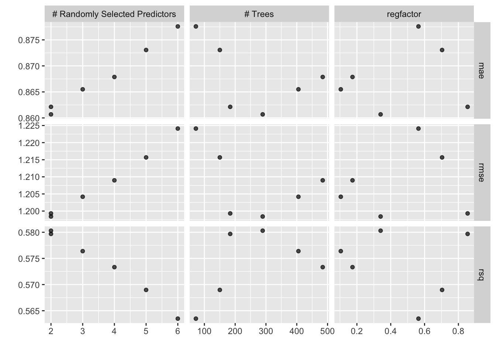

This page contains the abbreviated code for the C. Finmarchicus modeling examples. For a detailed walkthrough, look at the Tune and Workflowsets tutorials. The ecomon_data.csv.gz datafile is available for download on my GitHub.
library(tidymodels)
# Defining cfin dataset
cfin <- readr::read_csv("ecomon_data.csv.gz", col_types = readr::cols()) |>
na.omit() |>
mutate(month = lubridate::month(date) |> as.factor(),
year = lubridate::year(date),
abundance = log10(calfin_10m2 + 1)) |>
select(lat, lon, year, month, abundance, Bathy_depth, sfc_temp:btm_salt)
# Splitting the data
set.seed(400)
cfin_split <- initial_split(cfin, prop = 3/4, strata = abundance)
cfin_train <- training(cfin_split)
cfin_folds <- cfin_train |>
vfold_cv(v = 5, repeats = 1, strata = abundance)# Initializing tunable workflow
tune_recipe <- recipe(abundance ~ ., data = cfin_train) |>
update_role(lat, lon, year, new_role = "ID") |>
step_log(Bathy_depth, base = 10) |>
step_corr(threshold = .9) |>
step_normalize(all_numeric_predictors())
tune_model <- rand_forest(trees = tune(), mtry = tune()) |>
set_mode("regression") |>
set_engine("ranger", regularization.factor = tune("regfactor"))
tune_wkf <- workflow(preprocessor = tune_recipe,
spec = tune_model)
# Grid tuning object
latin_hypercube_tune <- tune_wkf |>
extract_parameter_set_dials() |>
update(trees = threshold(c(15, 500)),
mtry = mtry(c(1, 6))) |>
grid_latin_hypercube(size = 6)
# Performing tuning
results <- tune_grid(tune_wkf,
cfin_folds,
grid = latin_hypercube_tune,
metrics = metric_set(rsq, rmse, mae))
autoplot(results)
# Finalizing workflow
tuned_wkf <- finalize_workflow(tune_wkf,
select_best(results, metric = "rmse"))
# Final predictions
final_results <- last_fit(tuned_wkf, cfin_split)
augment(final_results)## # A tibble: 4,451 × 12
## lat lon year month abundance Bathy_depth sfc_temp sfc_salt btm_temp
## <dbl> <dbl> <dbl> <fct> <dbl> <dbl> <dbl> <dbl> <dbl>
## 1 40.6 -71.4 1977 8 5.41 64.6 19.8 32.4 9.18
## 2 40.2 -69.4 1977 8 5.29 86.5 20.7 33.0 9.06
## 3 40.8 -68.8 1977 8 4.96 68.6 12.9 32.7 11.7
## 4 40.9 -68.6 1977 8 4.39 56.2 12.4 32.6 12.4
## 5 41.1 -67.9 1977 8 4.70 49.1 13.2 32.6 13.1
## 6 41.9 -68.7 1977 8 5.64 163. 18.8 31.9 5.02
## 7 41.8 -69.6 1977 8 5.79 165. 18.7 31.8 5.09
## 8 43.2 -69.8 1977 8 5.81 140. 17.6 31.5 5.12
## 9 43.6 -69.1 1977 8 6.42 141. 16.1 32.0 5.88
## 10 43.3 -68.8 1977 8 5.90 139. 15.9 32.3 6.44
## # … with 4,441 more rows, and 3 more variables: btm_salt <dbl>, .pred <dbl>,
## # .resid <dbl># Initializing component recipes and models
basic_rec <- recipe(abundance ~ ., data = cfin_train) |>
update_role(lat, lon, year, new_role = "ID") |>
step_corr(threshold = .9) |>
step_dummy(all_nominal_predictors())
log_bathy <- basic_rec |>
step_log(Bathy_depth, base = 10)
normalize <- log_bathy |>
step_normalize(all_numeric_predictors())
rf <- rand_forest(mode = "regression",
engine = "ranger",
trees = 100)
brt <- boost_tree(mode = "regression",
engine = "xgboost",
trees = 15)
# Initializing Workflow set
cfin_wkfs <- workflow_set(preproc = list(basic = basic_rec,
log = log_bathy,
norm = normalize),
models = list(rf = rf,
brt = brt),
cross = TRUE)
# Executing operation across workflows
fitted_wkfs <- cfin_wkfs |>
workflow_map(fn = "fit_resamples",
verbose = FALSE,
seed = 400,
resamples = cfin_folds,
metrics = metric_set(rmse, rsq, mae),
control = control_resamples(save_pred = TRUE, save_workflow = TRUE))
# Collecting Results
fitted_wkfs |>
rank_results(rank_metric = "rmse", select_best = FALSE)## # A tibble: 18 × 9
## wflow_id .config .metric mean std_err n preprocessor model rank
## <chr> <chr> <chr> <dbl> <dbl> <int> <chr> <chr> <int>
## 1 basic_rf Preprocessor1… mae 0.867 0.00520 5 recipe rand… 1
## 2 basic_rf Preprocessor1… rmse 1.20 0.0104 5 recipe rand… 1
## 3 basic_rf Preprocessor1… rsq 0.584 0.00435 5 recipe rand… 1
## 4 log_rf Preprocessor1… mae 0.867 0.00520 5 recipe rand… 2
## 5 log_rf Preprocessor1… rmse 1.20 0.0104 5 recipe rand… 2
## 6 log_rf Preprocessor1… rsq 0.584 0.00437 5 recipe rand… 2
## 7 norm_rf Preprocessor1… mae 0.867 0.00519 5 recipe rand… 3
## 8 norm_rf Preprocessor1… rmse 1.20 0.0104 5 recipe rand… 3
## 9 norm_rf Preprocessor1… rsq 0.584 0.00435 5 recipe rand… 3
## 10 basic_brt Preprocessor1… mae 0.889 0.00633 5 recipe boos… 4
## 11 basic_brt Preprocessor1… rmse 1.22 0.0105 5 recipe boos… 4
## 12 basic_brt Preprocessor1… rsq 0.562 0.00490 5 recipe boos… 4
## 13 log_brt Preprocessor1… mae 0.889 0.00633 5 recipe boos… 5
## 14 log_brt Preprocessor1… rmse 1.22 0.0105 5 recipe boos… 5
## 15 log_brt Preprocessor1… rsq 0.562 0.00490 5 recipe boos… 5
## 16 norm_brt Preprocessor1… mae 0.889 0.00633 5 recipe boos… 6
## 17 norm_brt Preprocessor1… rmse 1.22 0.0105 5 recipe boos… 6
## 18 norm_brt Preprocessor1… rsq 0.562 0.00489 5 recipe boos… 6